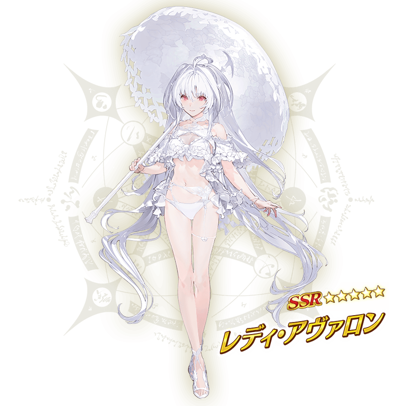
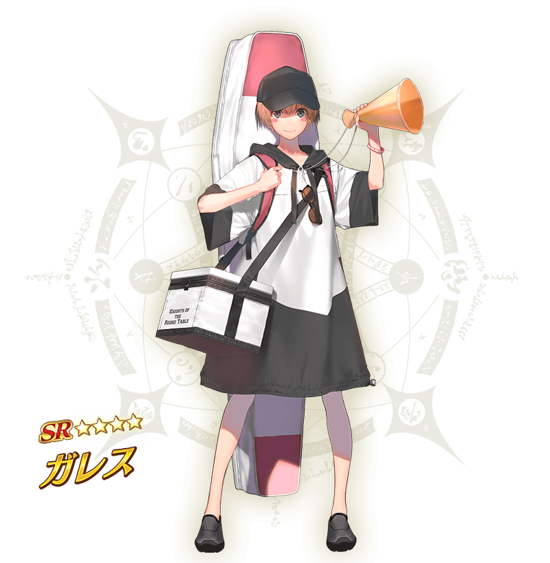
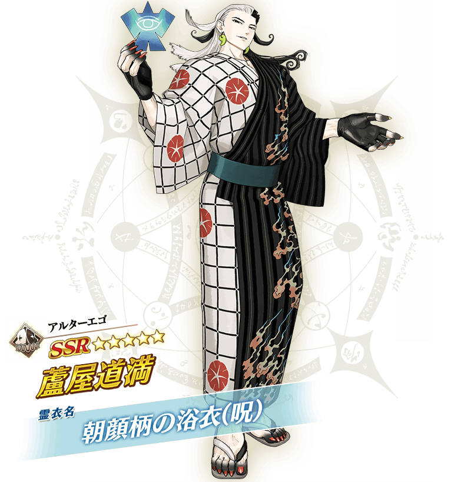
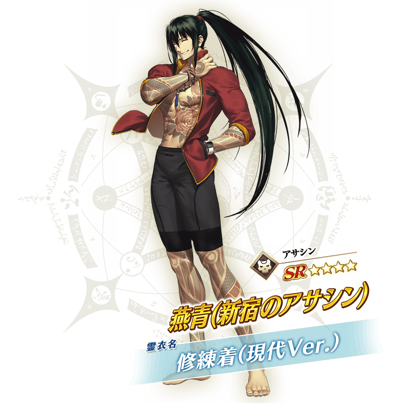
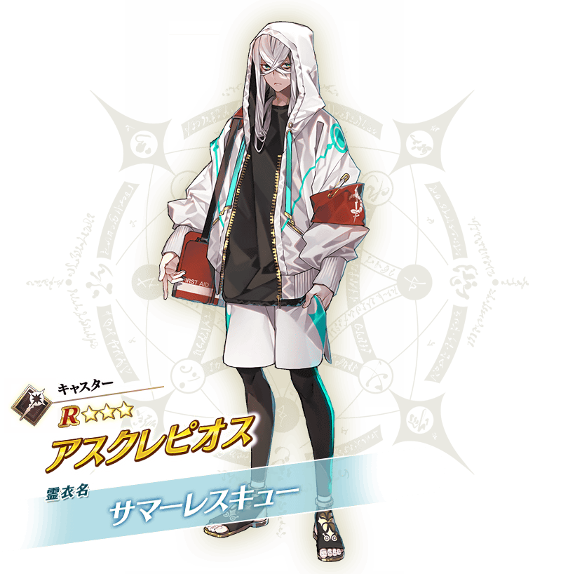
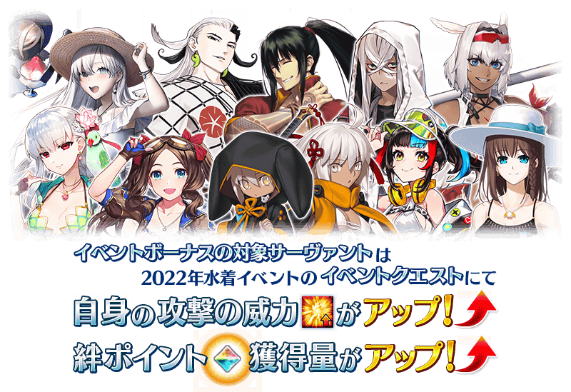

2022年的泳裝活動今年也決定以期間限定開幕！
新泳裝從者登場外，原有從者添上夏日色彩的靈衣也會登場。
詳情敬請期待續報。
※在文字冒險部份會包含第2部的內容。 ※在2018年12月31日(二) 23:00以後新配信的主線故事及期間限定活動、一部份關卡、宣傳活動及召喚中，會顯示隱藏真名的對象從者真名。 ※本頁面皆為開發中圖片。會有與實際圖片相異的情況。
◆活動開幕預定◆
2022年8月中旬
◆活動參加條件◆
滿足以下條件的御主才能參加
・通過「特異點F 炎上汙染都市 冬木」
在預定與2022年泳裝活動同時舉辦的期間限定聖晶石召喚，新從者登場！
本次介紹2位新登場從者！


公開2位新從者的介紹影像！
公開2位新登場從者「★5(SSR)阿瓦隆女士」與「★4(SR)加雷斯」的介紹影像！
新的靈衣開放權做為2022年泳裝活動的報酬登場！
本次從這之中，介紹本活動中預定登場的身穿新靈衣從者「★5(SSR)蘆屋道滿」「★4(SR)燕青(新宿的Assassin)」「★3(R)阿斯克勒庇俄斯」。



公開3位追加靈衣從者的介紹影像！
公開3位身穿靈衣「朝顔柄の浴衣(呪)」「修練着(現代Ver.)」「サマーレスキュー」從者的介紹影像！
【8月5日(五) 17:00追記】
2022年泳裝活動的期間中，一部份的從者在活動關卡中會得到「自身的攻擊威力提升」與「絆點數獲得量提升」的加成！
※活動加成的效果量因從者而異。 ※瑪修・基利艾拉特的「絆點數獲得量提升」效果，是所謂「我方全體含候補的絆點數獲得量提升」的效果。支援時此效果無效。

【活動加成的對象從者】
| 職階 | 稀有度 | 從者名 |
|---|---|---|
| Saber | ★★★★★ | 沖田總司〔Alter〕 |
| ★★★★★ | 齊格魯德 | |
| ★★★★ | 葛飾北齋 | |
| ★★★★ | 齊格飛 | |
| ★★★★ | 女王梅芙 | |
| ★★★★ | 巴御前 | |
| ★★★★ | 弗蘭肯斯坦 | |
| ★★★★ | 蘭陵王 | |
| Archer | ★★★★★ | 阿爾托莉亞・潘德拉剛 |
| ★★★★★ | 貞德 | |
| ★★★★ | 安娜塔西亞＆Viy | |
| ★★★★ | 安妮・伯妮＆瑪莉・瑞德 | |
| ★★★★ | 伊莉雅絲菲爾・馮・愛因茲貝倫 | |
| ★★★★ | Emiya | |
| ★★★★ | 海倫娜・布拉瓦茨基 | |
| ★★★★ | 刑部姬 | |
| ★★★ | 羅賓漢 | |
| Lancer | ★★★★★ | 玉藻前 |
| ★★★★ | 茨木童子 | |
| ★★★★ | 清姬 | |
| ★★★★ | 虞美人 | |
| ★★★★ | 謎之Alterego・Λ | |
| ★★★★ | 源賴光 | |
| Rider | ★★★★★ | 阿基里斯 |
| ★★★★★ | 阿爾托莉亞・潘德拉剛〔Alter〕 | |
| ★★★★ | 伊絲塔 | |
| ★★★★ | 卡米拉 | |
| ★★★★ | 凱妮絲 | |
| ★★★★ | 紫式部 | |
| ★★★★ | 莫德雷德 | |
| ★★★ | 曼迪卡爾多 | |
| ★★ | 愛德華・蒂奇 | |
| Caster | ★★★★★ | 尼祿・克勞狄烏斯 |
| ★★★★★ | 梅林 | |
| ★★★★ | 吉爾伽美什 | |
| ★★★★ | 夏洛特・科黛 | |
| ★★★★ | 瑪莉・安東尼 | |
| ★★★ | 阿斯克勒庇俄斯 | |
| Assassin | ★★★★ | 牛若丸 |
| ★★★★ | 燕青(新宿的Assassin) | |
| ★★★★ | 沖田・J・總司 | |
| ★★★★ | 斯卡薩哈 | |
| ★★★★ | 尼托克里絲 | |
| ★★★ | 風魔小太郎 | |
| Berserker | ★★★★★ | 宮本武藏 |
| ★★★★ | 織田信長 | |
| ★★★★ | 貞德〔Alter〕 | |
| ★★★★ | 清少納言 | |
| ★★★★ | 布倫希爾德 | |
| Ruler | ★★★★★ | 阿爾托莉亞・潘德拉剛 |
| ★★★★ | 瑪爾大 | |
| ★★★★ | 李奧納多・達・文西 | |
| Avenger | ★★★★★ | 迦摩 |
| ★★★★★ | 巖窟王 | |
| Alterego | ★★★★★ | 蘆屋道滿 |
| MoonCancer | ★★★★★ | Archetype:Earth |
| ★★★★★ | 殺生院祈荒 | |
| ★★★★★ | BB | |
| Foreigner | ★★★★★ | 艾比蓋兒・威廉斯〔夏〕 |
| ★★★★ | 謎之女主角XX | |
| Shielder | ★★★ | 瑪修・基利艾拉特 |
※就算成為對象從者也會有未在本活動的主線劇本登場的情況。 ※自8月5日(五) 17:00，在從者選擇畫面和從者強化畫面等，追加活動加成篩選器。由於是只顯示於活動活躍從者的便利功能，敬請活用。